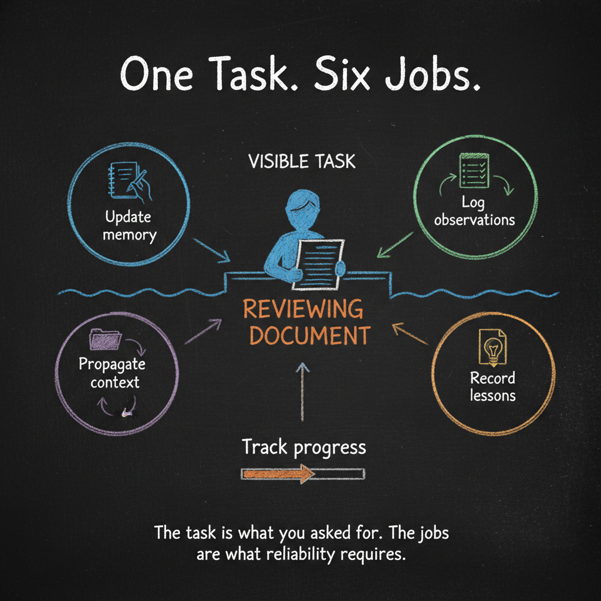
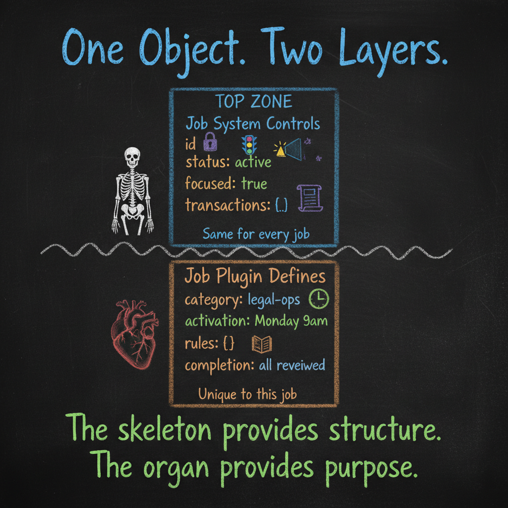

Every Agent Needs a Skeleton
Your agent does the job. It just does not manage the work.
Ask a CLI agent to review a contract. It will review the contract. It will not record what it learned. It will not update its own notes for the next review. It will not flag the pattern it noticed across the last five batches. It will not file the observation where a future session can find it.
It did the task. It did not manage the work around the task.
This is the real problem — and it is not amnesia. Today’s CLI agents do have memory. They can write notes to files. They can read those notes at the start of the next session. The primitive machinery exists.
But here is what that primitive memory actually looks like: scattered Markdown files. Unstructured. Probabilistic — the agent might update them, or might not. Unbounded — no rules about what goes where, what matters, what can be safely forgotten. No enforcement. No consistency.
The agent spends nearly all of its compute doing what you asked. What is left for managing what it learned, where that knowledge should live, or how to make the next task better? Inconsistent at best. Sometimes it updates its notes. Sometimes it does not. Unless you keep reminding it — and at that point, you are the job system.
A reliable agent cannot afford to have a single objective. Completing the task is one objective. But simultaneously, the agent must manage its own memory. Propagate context to the right places. Record observations. Absorb lessons. A dozen responsibilities running alongside the focused work — not after it, not when there is time, but during it, as part of the same workflow.
That is what a job system provides. A structural framework that turns a single-minded task executor into a multi-objective cognitive worker.
Why One Objective Is Not Enough
Here is what a basic CLI agent does when you ask it to research a topic and write a report:
It searches. It reads files. It asks you clarifying questions. It gathers context into the conversation. Then it writes the report. Task complete.
Here is what is missing. Every one of these steps produced useful information — search results that narrowed the scope, files that revealed structure, your answers that clarified intent. All of that context lives in the conversation stream. When the session ends, it evaporates.
A multi-objective agent does the same research — but alongside the task, it also writes the key observations to working memory files. It updates the project notes in the directories where the work is happening. It records what it learned so that when a subagent is dispatched to write a section of the report, that subagent already has the context it needs — not from a conversation it was never part of, but from files it can read.
When the report is done, the lessons are already captured. The next project in the same domain starts ahead, not from zero.
This is the difference between doing a task and managing work. And jobs are how you enforce it.

In Essay 3, we described agents as digital cognitive organs — extensions your biology never built. Memory organs, immune systems, sensory networks. All of that is real and necessary.
But organs do not float.
In a living body, every system depends on the skeleton. The heart needs the ribcage. Muscles need bones. Nerves need the spinal column. Without structural framework, organs are just tissue in a pile.
The job system is the skeleton. It holds every other cognitive organ in place. And it enforces the discipline that a single-objective agent will never develop on its own: every phase of work must produce durable artifacts, not just conversation.
Your First Look Inside: The Shape of Data
Here is where this essay takes a small step the previous four did not. We are going to look at something technical — not code, not programming — but the shape of information inside your agent.
The format is called JSON. It stands for JavaScript Object Notation. Ignore the JavaScript part. What matters is the notation — the way it organizes information.
Here is what JSON looks like:
{
"name": "Review contract batch",
"status": "active",
"category": "legal-review",
"created": "2026-03-08"
}That is it. Curly braces hold the object. Each line is a key-value pair — a label and its content. "name" is the label, "Review contract batch" is the value. Structured, readable, precise.
Why does this matter to you?
Because when you control the shape of the data, you control the agent. Every behavior your agent has — what it works on, what it protects, what it refuses to forget — is defined in structured data exactly like this. Not in mysterious neural weights. Not in opaque model internals. In files you can open, read, and understand.
You do not need to learn how to write code that manipulates JSON. But you will benefit enormously from recognizing its shape — from thinking in structured data when you think about your agent’s work.
Look at a slightly richer example:
{
"name": "Quarterly compliance audit",
"status": "active",
"category": "compliance",
"permanent": false,
"observation": "Found 3 contracts missing renewal clauses",
"rules": [
{
"condition": "Document older than 90 days",
"action": "flag for review"
}
]
}Read that out loud. Even without a technical background, you can see the structure.
This is a job object. Get comfortable with that term.
Every job your agent has — every responsibility, every recurring task, every workflow — gets represented as a JSON object like this one. A job object will have fields — a name, a status, a category, an observation — whatever set of fields the job requires. The specific fields are not important yet. What matters is that the job is defined — structured, readable, persistent.
As we progress, we will discover which fields are universal across all jobs and belong under the control of the job system itself, and which are unique to specific jobs and belong in their own plugins. That discovery is part of the craft. For now, the insight is simpler: when you represent work as a structured object, you can control it.
The job system is what holds and manages all of these job objects. It is the single file where every job lives, and the machinery that reads their fields, enforces their rules, and tracks their state.
This is how you control an agent. Not with prompts that evaporate. With structured job objects that persist.
Five Principles of a Job System
Any job system worth building follows five principles.
1. Work Must Persist — and Jobs Must Control the Agent
The most basic requirement: when a session ends, work does not vanish. Jobs live in files on disk. The agent reads them at the start of every session. Unfinished work is still unfinished. Active tasks are still active.
This sounds obvious. It is not. The default behavior of every language model is the opposite — everything is temporary, everything disappears when the conversation closes.
A job system inverts this default. Work persists until it is completed, not until the session ends.
But persistence alone is just a to-do list. Here is what separates jobs from to-dos.
A to-do list is passive. The agent creates it, glances at it, maybe checks things off. The to-do has no power over the agent. It is a reminder, not a constraint.
A job is active. It controls the agent back.
The fields you define in a job object are not just data — they are instructions. A job can keep the agent in a loop until a condition is met. It can force the agent through specific steps in a specific order. It can limit what the agent is allowed to do while the job is active. It can block the agent from stopping entirely — as long as any job managed by the system is active, the agent cannot walk away. You, the human, can override that. But the default is structural: unfinished work holds.
This is a two-way system. The agent works on jobs. The jobs control the agent. That bidirectional relationship is what makes jobs fundamentally different from anything a simple task list can provide.
2. Work Must Be Compartmentalized
One focus at a time. Tracked. Auditable.
Every action the agent takes while focused on a job gets recorded — a transaction log, like the growth rings of a bone. What happened, when, in what order. Not for surveillance. For transparency. For the ability to look at any job and understand exactly what your agent did.
Compartmentalization prevents context bleed. Your agent does not mix your contract review with your hiring pipeline. Each job has its own identity, its own state, its own rules. The filing cabinet does not care what is inside the folders — but it keeps the folders separate.
In JSON terms, every action becomes a structured record:
{
"timestamp": "2026-03-08T14:30:00",
"action": "Reviewed section 4.2 — flagged ambiguous liability clause",
"job": "contract-review-batch-7"
}Work that is tracked is work you can trust. Work that disappears into conversation history is work you have to verify from scratch.
3. The Agent Can Modify Itself — Through Controlled Pathways
This is where agents diverge from traditional software. Your agent is not a locked box. It knows about its own architecture. It is allowed to change itself — to update its own rules, adjust its own thresholds, evolve its own behaviors.
But not arbitrarily. Through specific, defined pathways.
Think of it like this: a living skeleton remodels constantly. Bones respond to stress, heal from fractures, grow denser where load is applied. But they remodel through biological pathways — osteoclasts break down old bone, osteoblasts build new bone, hormones regulate the pace. The process is controlled, not chaotic.
Your agent works the same way. There is one defined pathway for modifying the job store — one gate, one script. Every change goes through it. Every change is validated against rules. Every change is logged. The agent can grow and adapt, but it cannot silently reshape its own skeleton without leaving a trace.
And some parts of the skeleton are more protected than others:
- Open fields — the agent can adjust these freely. Thresholds, working notes, step-by-step guidance. Growth plates where change is expected.
- Controlled fields — the agent can propose changes, but you approve them. The job’s name, its core objective, its purpose. Identity should not drift without your knowledge.
- Fixed fields — never change, period. The unique identifier, the creation timestamp, the transaction history. The mineralized core.
You have the control. The agent has the autonomy to grow within the boundaries you set.
4. The System Must Be Job-Agnostic
The job system is a heartbeat, not a taskmaster.
It does not know what a “contract review” is. It does not know what “quarterly compliance” means. It does not understand any specific domain or profession. That is by design.
The job system does exactly one thing: it keeps the agent working as long as active jobs exist. It tracks state. It enforces compartmentalization. It protects the data. It logs transactions. That is the skeleton — purely mechanical, purely structural.
The meaning of each job — its rules, its domain logic, its activation conditions — lives in the job itself. Remember what a plugin is from Essay 4 — a unified package of hooks, skills, context, sub-agents, and scripts. The job system is a plugin. And every individual job is also a plugin — one that enacts the rules of its own job object. Each job plugin brings its own sensory layer through hooks, its own operational side through skills and sub-agents, its own context and supporting files.
The responsibilities are different. The job system plugin manages the whole system — all job objects, all universal fields, all write protection. An individual job plugin manages only what is related to that job — its unique fields, its specific behaviors, its domain logic.
This separation is fundamental. A new job plugin snaps onto the skeleton like a new organ attaching to the ribcage. The skeleton does not need to be redesigned for every new organ.
5. Jobs Can Activate in Many Ways
A job system that only responds to explicit commands is a glorified to-do list. A real job system supports multiple activation patterns:
- Condition-based: the agent detects a trigger through its hooks and events — automatic sensory responses that fire when something changes. Uncommitted changes activate the memory job. Stale documentation activates the maintenance job.
- User-initiated: you tell the agent to start working on something. A new task appears, status: active.
- Scheduled: jobs that activate at regular intervals — daily reviews, weekly audits, monthly reconciliations.
- Agent-initiated: during one job, the agent realizes another job is needed and creates it. Scheduling ahead so nothing falls through the cracks.
- Chained: completing one job automatically activates the next in a pipeline.
And this list is not exhaustive. The point is: no artificial limitations. The job system should accommodate any activation pattern your work requires. Your profession determines how work arrives — sometimes on a schedule, sometimes as emergencies, sometimes as follow-ups from other work. The system adapts to you, not the other way around.
Where the Control Lives
Here is the design question that matters more than any other: what belongs in the job system versus what belongs in each job plugin?
We said some fields will turn out to be universal and some unique. Here is what that looks like in practice.
The job system plugin owns the universal mechanics:
- Status rules — which transitions are allowed (an active job can move to completed, but a completed job cannot jump back to active without going through the right steps)
- Write protection — one gate, one pathway, all changes logged
- Stop-blocking — active work prevents premature exit
- Transaction logging — every action recorded
- Focus management — one job at a time
- Protection tiers — open, controlled, fixed
Each job plugin owns its specific intelligence:
- Activation conditions — when does this job wake up?
- Domain rules — what does this job care about?
- Specific behaviors — how does this job guide the agent?
- Completion criteria — when is this job actually done?
- Observation handling — what should the agent learn from this work?
In a job object, both layers coexist. The universal fields and the job-specific fields live side by side in the same JSON structure:
{
"id": "job_001",
"name": "Weekly case file review",
"status": "active",
"focused": true,
"transactions": [],
"category": "legal-ops",
"activation": "every Monday 9am",
"rules": [
{
"condition": "Case file missing client signature",
"action": "flag and notify"
}
],
"completion_criteria": "All files reviewed, zero unresolved flags"
}
Look at it. The top half — id, status, focused, transactions — is managed by the job system plugin. The bottom half — category, activation, rules, completion_criteria — is defined by the job’s own plugin. One object. Two layers of control. The skeleton provides structure. The organ provides purpose.
What This Means for You
If you have read this far, you have crossed a threshold. You now understand something most people — including most technologists — have not grasped about agents:
The task was never the only objective.
A reliable agent does not just do what you asked. It manages the work around what you asked — memory, context, observations, lessons. And it does this not because you reminded it, but because the structure enforces it.
Here is what changes when your agent has a skeleton:
- You close your laptop and nothing is lost. Your agent picks up exactly where it left off — same jobs, same progress, same observations. No re-explaining. No starting over.
- You can inspect any job and see the full history. Every action, every transition, every note. Structured, readable, trustworthy. Not buried in conversation transcripts you would need to scroll through for a few minutes.
- You control the identity of every job. The agent grows and adapts, but it cannot silently redefine what it is working on. Changes to purpose, scope, and objectives require your approval.
- New capabilities snap on without redesigning the core. Want your agent to handle a new type of work? Define a new job plugin. The skeleton already knows how to support it.
- You start thinking in structure. Once you see the JSON — once you see how clean, readable data shapes agent behavior — you start seeing your own work differently. Tasks become objects. Workflows become structured transitions. Chaos becomes architecture.
That last one is the quiet revolution. Not the technology. The thinking.
The Shape of What Comes Next
We now have vocabulary (Essay 4). We have the argument for why agents need to exist (Essay 3). We have the foundational distinction between engine and agent (Essay 1).
And now we have the skeleton — the first concrete cognitive organ, the structural framework that makes everything else possible.
Here is the core principle, stripped to its essence: the job system lets you define any number of jobs for your agent, activated by any stimulus, and it makes sure the agent will not stop until every active job is addressed. That is the skeleton’s one non-negotiable function — blocking the stop. Everything else we add to a job’s definition — the fields, the rules, the activation patterns, the protection tiers — is free and open design space you can shape to fit your work.
The next essay will explore that design space: what categories of jobs does an effective agent need? What is the minimal architecture each category requires? Which fields belong in every job, and which belong only in some? We will start attaching organs to this skeleton — and you will see how a structured job object, combined with a plugin that enacts its rules, turns a passive assistant into a working partner.
Your agent used to just do the job. Now it manages the work.
Hadosh Academy — Agents Series
Essay 1: LLMs Are Not the Agents
Essay 2: We Could Have Had AGI By Now
Essay 3: Your Brain Was Never Built for This
Essay 4: The Language of Agents
Essay 5: Every Agent Needs a Skeleton (this post)
Resources:
hadi-nayebi.github.io
skool.com/claude-agents-engineering